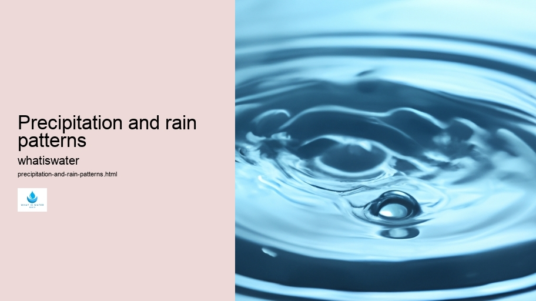

Hydrological Cycle
Hydrological Cycle
Evaporation and transpiration
Condensation and cloud formation
Precipitation and rain patterns
Surface runoff and river systems
Groundwater flow and aquifers
Snowmelt and glacial processes
Water storage in oceans lakes and reservoirs
Soil moisture and infiltration
Water balance and budgeting
Human impact on the hydrological cycle
Marine Ecosystems
Marine Ecosystems
Coral reefs and their biodiversity
Mangrove forests as coastal protectors
Ocean currents and climate regulation
Deepsea habitats and extremophiles
Intertidal zones and estuarine ecosystems
Marine food webs and trophic levels
Freshwater Ecosystems
Freshwater Ecosystems
Conservation efforts for marine species
Marine biogeochemical cycles
Impact of global warming on oceans
Water Resource Management
Water Resource Management
Rivers streams and creeks ecosystems
Lakes ponds wetlands habitats
Biodiversity in freshwater environments
Aquatic plants role in oxygenation
Freshwater fish species diversity
Invasive species impact on freshwater systems
Pollution threats to freshwater sources
Conservation strategies for freshwater biomes
Role of wetlands in flood control
Importance of riparian buffers
Cultural Significance of Water
Cultural Significance of Water
Sustainable water use practices
Desalination technologies for fresh water supply
Wastewater treatment processes
Rainwater harvesting techniques
Management of water during drought conditions
Transboundary water resource politics
Infrastructure for water distribution
Agricultural irrigation efficiency
Urban water demand management
Impact of climate change on water resources
About Us
Contact Us

Precipitation and rain patterns
Water Cycle
Precipitation is a fundamental atmospheric process, encompassing various forms of water droplets or ice particles falling from the sky. It plays a crucial role in Earth's hydrological cycle, replenishing freshwater resources and influencing climate patterns worldwide.
Rain, the most common form of precipitation, showcases diverse patterns that vary geographically and temporally.
Water Scarcity
These patterns are shaped by numerous factors including geography, topography, ocean currents, and prevailing wind systems.
Precipitation and rain patterns - Water Pollution
Sustainable Water Use
Water Education
Water Quality
Ocean Conservation
Hydrologic Cycle
Aquifers
Areas near the equator typically experience heavy rainfall due to intense solar heating which promotes strong upward convection currents, leading to substantial cloud formation and consequent rain showers.
Conversely, regions situated within subtropical high-pressure zones often encounter arid conditions with minimal rainfall.
Water Pollution
Such dry belts include the Sahara Desert in Africa or the Arabian Peninsula where rain is infrequent due to descending air masses that inhibit cloud development.
Topographical features like mountains can also manipulate rain patterns significantly through orographic lift — when moist air ascends along a mountain slope, cools adiabatically, and releases moisture as precipitation on the windward side.
Precipitation and rain patterns - Water Scarcity
Water Pollution
Water Law and Policy
Water Scarcity
Water Footprint
Sustainable Water Use
Water Education
This results in a wet climate on one side while creating a rain shadow effect on the leeward side where drier conditions prevail.
Moreover, large bodies of water influence regional precipitation by affecting temperature differentials between land and sea. Coastal areas may have more consistent rainfall throughout the year compared to inland locations because oceans moderate temperature fluctuations and provide a steady source of moisture for cloud formation.
Water Cycle
The El Niño–Southern Oscillation (ENSO) phenomenon exemplifies how ocean-atmosphere interactions can disrupt regular precipitation patterns globally. During an El Niño event, warmer sea surface temperatures in the Pacific Ocean lead to changes in atmospheric circulation which can cause droughts in some places while triggering excessive rains and even flooding in others.
Human-induced climate change has begun altering historical precipitation trends as well.
Water Education
Sustainable Water Use
Increased global temperatures have augmented evaporation rates and altered atmospheric dynamics; this has led to shifts in rainfall distribution with some areas experiencing intensified downpours whereas others face prolonged dry spells.
Predicting future changes in rain patterns remains challenging due to complex interactions within Earth's climate system. Nonetheless, understanding these dynamics is essential for managing water resources effectively and mitigating potential impacts from floods or droughts related to shifting precipitation regimes.
In conclusion, studying precipitation and its varied manifestations such as rain provides invaluable insights into weather phenomena that directly affect ecosystems as well as human societies.
Water Law and Policy
As we continue witnessing alterations induced by anthropogenic activities alongside natural variability within our atmosphere's delicate balance, it becomes increasingly vital to comprehend these intricate processes shaping life on our planet.
Water Quality
Hydrological Cycle
Surface runoff and river systems
Check our other pages :
Lakes ponds wetlands habitats
Rainwater harvesting techniques
Impact of climate change on water resources
Evaporation and transpiration
Frequently Asked Questions
What causes precipitation to occur?
Precipitation occurs when atmospheric water vapor condenses into liquid or solid form and falls to the ground. This process typically happens within clouds when warm, moist air rises, cools, and loses its capacity to hold water vapor. As a result, the excess moisture condenses around tiny particles in the air (like dust), forming droplets or ice crystals that grow heavy enough to overcome air resistance and fall as rain, snow, sleet, or hail.
How do different types of precipitation form?
Different types of precipitation form depending on temperature conditions both at cloud level and near the earths surface. Rain forms when falling droplets remain above freezing temperatures throughout their descent. If the air is cold enough at all levels, precipitation falls as snow. Sleet is formed when raindrops pass through a layer of cold air and freeze before hitting the ground. Hail occurs during strong thunderstorms with powerful updrafts; water droplets are carried upward into extremely cold areas of the atmosphere where they freeze before falling.
What factors influence global rain patterns?
Global rain patterns are influenced by several factors including latitude, altitude, prevailing wind currents, ocean currents, topography, vegetation cover, and human activity. The Intertropical Convergence Zone (ITCZ), where trade winds converge near the Equator typically sees high rainfall. Areas at high latitudes can be drier due to colder temperatures that reduce evaporation rates. Mountain ranges can create rain shadows on their leeward sides while coastal regions might experience more precipitation due to oceanic influences.
How are changing climate conditions affecting precipitation patterns?
Changing climate conditions due to global warming are impacting precipitation patterns by altering temperature and atmospheric moisture levels which affect cloud formation and weather systems. Some regions may experience increased rainfall leading to flooding while others could face droughts as rainfall becomes more erratic or decreases overall. Extreme weather events like intense storms are becoming more frequent. Climate change also affects seasonal trends in rainfall which can disrupt ecosystems and human activities such as agriculture dependent on predictable weather patterns.